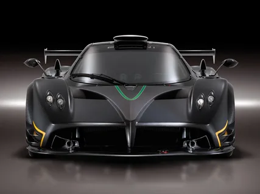

Pagani Automobili S.p.A. (commonly referred to as Pagani) is an Italian manufacturer of hypercars and carbon fiber components. The company was founded in 1992 by the Argentinean-Italian Horacio Pagani and is based in San Cesario sul Panaro, near Modena, Italy.
